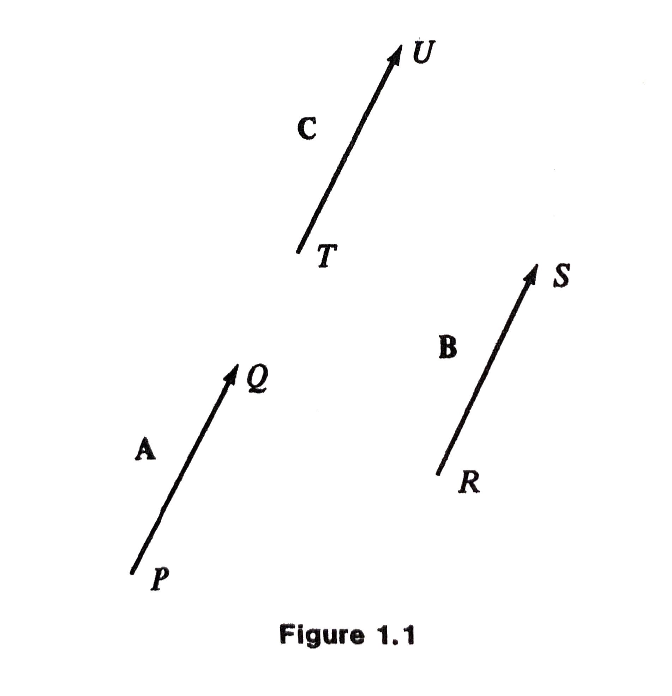
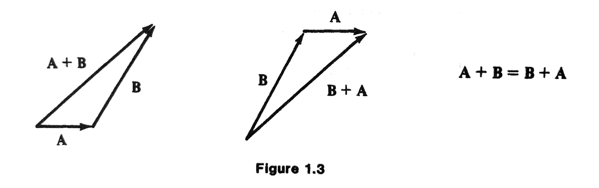
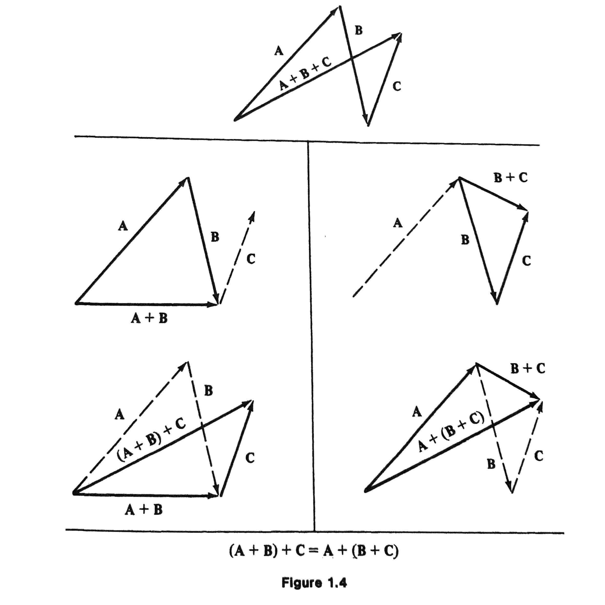
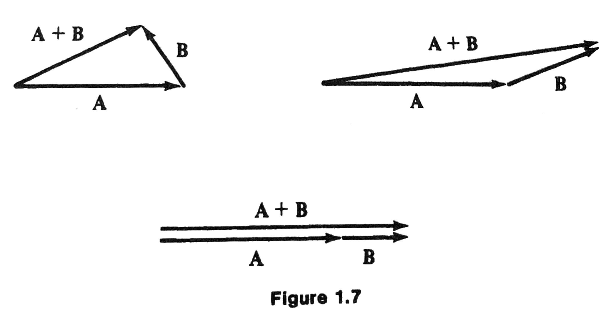
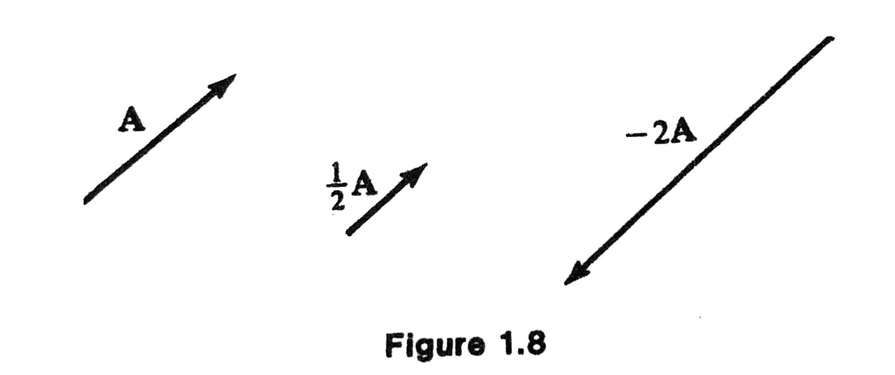
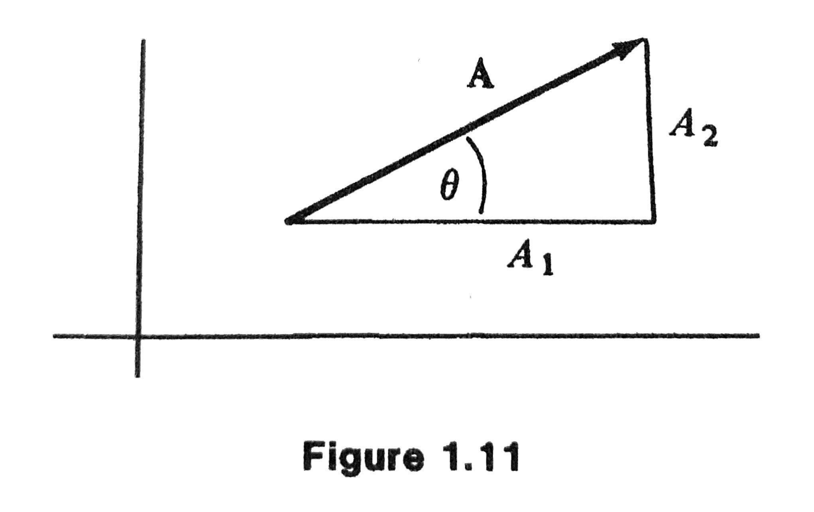
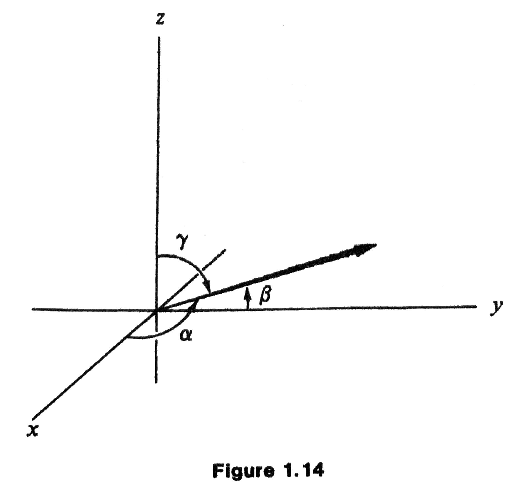

MATH 4100 - Vector Analysis
Jie Zhong
Department of Mathematics
California State University, Los Angeles
Chapter 1 Vector Algebra
1.1 Definitions
What is a vector?
- A vector is a quantity that has both direction and magnitude. It can be visualized as a directed line segment.
- A line segment \(PQ\) is a portion of the line between the points \(P\) and \(Q\)
- A directed line segment is a line segment when the endpoints are given a definite order.
- Two directed line segments are equivalent if they are parallel with the same direction and have the same length.
Definition (Vector)
- A vector is a collection of equivalent directed line segments. It is denoted by \(\mathbf{A}\) (boldfaced letters), or \(\underline{A}\) or \(\overrightarrow{A}\).
- In Figure 1.1, we see that \(PQ, RS\), and \(TU\) are all equivalent and they represent the same vector, regardless of the initial and end positions.

More Definitions
- The magnitude (or the length, or the norm) \(|\mathbf{A}|\) of a vector \(\mathbf{A}\) is the distance between the initial and terminal points of its (any) equivalent directed line segment.
- If \(P\) and \(Q\) coincide, \(PQ\) is said to be degenerate, and the line segment is just a point. The corresponding vector is called the zero vector.
- Zero vector has zero magnitude and does not have any direction.
- Scalar is just a (real) number.
Examples
- Vectors: velocity, position, force, acceleration, etc.
- Scalars: mass, energy, volume, temperature, etc.
1.2 Addition and Subtraction
Addition
- The sum \(\mathbf{C} = \mathbf{A} + \mathbf{B}\) has the initial point at the initial point of \(\mathbf{A}\) and the endpoint at the endpoint of \(\mathbf{B}\).
- By definition, if \(\mathbf{A} = \mathbf{A}'\) and \(\mathbf{B} = \mathbf{B}'\), then \[ \mathbf{A} + \mathbf{B} = \mathbf{A}' + \mathbf{B}'. \]

Commutative:
\[ \mathbf{A} + \mathbf{B} = \mathbf{B} + \mathbf{A}. \]

Associative:
\[ (\mathbf{A} + \mathbf{B}) + \mathbf{C} = \mathbf{A} + (\mathbf{B} + \mathbf{C}). \]

Subtraction

- If \(\mathbf{B}\) is a vector, \(-\mathbf{B}\) is defined to be the vector with the same magnitude as \(\mathbf{B}\) but opposite direction.
- Subtraction of vectors: \[ \mathbf{A} - \mathbf{B} = \mathbf{A} + (-\mathbf{B}). \]
Properties of Zero Vector
- \(\mathbf{0} = - \mathbf{0}\)
- \(\mathbf{A} - \mathbf{A} = \mathbf{0}\)
- \(\mathbf{A} + \mathbf{0} = \mathbf{0} + \mathbf{A} = \mathbf{A}\)
Exercise (page 6)

- Write \(\mathbf{C}\) in terms of \(\mathbf{E}, \mathbf{D}, \mathbf{F}\).
- Write \(\mathbf{G}\) in terms of \(\mathbf{C}, \mathbf{D}, \mathbf{E}, \mathbf{K}\).
- Solve for \(\mathbf{x}: \mathbf{x} + \mathbf{B} = \mathbf{F}\).
- Solve for \(\mathbf{x}: \mathbf{x} + \mathbf{H} = \mathbf{D} - \mathbf{E}\).
1.3 Multiplication of Vectors by Numbers
Properties of Magnitude
- \(|\mathbf{A}| \ge 0\)
- \(|\mathbf{A}| = 0\) if and only if \(\mathbf{A} = 0\)
- \(|\mathbf{A}| = |-\mathbf{A}|\), and \(|\mathbf{A} - \mathbf{B}| = |\mathbf{B} - \mathbf{A}|\)
- Triangle inequality: \(| \mathbf{A} + \mathbf{B} | \le | \mathbf{A} | + | \mathbf{B} |\)

Scalar multiplication
A scalar multiple of \(\mathbf{A}\) by a number \(s\) is defined by \(s \mathbf{A}\):
- \(|s \mathbf{A}| = |s| |\mathbf{A}|\).
- \(s \mathbf{A}\) has the same direction if \(s>0\) or the opposite direction if \(s<0\).

Properties of Scalar Multiplication
- \(0 \mathbf{A} = \mathbf{0}, 1 \mathbf{A} = \mathbf{A}, (-1) \mathbf{A} = - \mathbf{A}\)
- \((s + t) \mathbf{A} = s \mathbf{A} + t \mathbf{A}\)
- \(s(\mathbf{A} + \mathbf{B}) = s \mathbf{A} + s \mathbf{B}\)
- \(s(t \mathbf{A}) = (st) \mathbf{A}\)
Standardization
- Unit vector: a vector whose magnitude is \(1\).
- We can create a unit vector in the direction of any given (nonzero) vector \(\mathbf{A}\): \[ \frac{\mathbf{A}}{|\mathbf{A}|}\quad\text{so that}\quad \left|\frac{\mathbf{A}}{|\mathbf{A}|} \right| = \frac{|\mathbf{A}|}{|\mathbf{A}|} = 1. \] This process is called the standardization or normalization of a vector.
1.4 Cartesian Coordinates
Cartesian Coordinates in \(\mathbb{R}^2\)
In this section, we consider a cartesian coordinate system in the plane or \(\mathbb{R}^2\) by introducing two mutually perpendicular axes, labeled as \(x\) and \(y\).
The unit vectors \(\mathbf{i}, \mathbf{j}\) parallel to the \(x\text{-axis}\), \(y\text{-axis}\), respectively, pointing to the positive directions.
Orthogonal Projections
Every vector in the plane can be written uniquely in the form
\[ \mathbf{A} = A_1 \mathbf{i} + A_2 \mathbf{j}. \]
The real numbers \(A_1, A_2\) are called the cartesian components (or orthogonal projections) of \(\mathbf{A}\).
The magnitude of the vector \(\mathbf{A}\) is
\[ \vert\mathbf{A}\vert = \sqrt{A_1^{2} + A_{2}^{2}} \]
Direction Angles
The angles between the vector and the coordinate axes are the direction angles, which is conventionally taken to be positive in the counterclockwise sense.
Suppose \(\mathbf{A}\) is a nonzero vector, how to express the direction angle \(\theta\) in the figure below in terms of \(\mathbf{A}, A_1, A_2\)?

\[ \cos \theta = \frac{A_1}{|\mathbf{A}|}. \]
1.5 Space Vectors
Cartesian Coordinates in \(\mathbb{R}^3\)
- All concepts or ideas from Sec 1.4 can be extended to \(\mathbb{R}^3\).
- The unit vectors \(\mathbf{i}, \mathbf{j}, \mathbf{k}\) parallel to the \(x\text{-axis}\), \(y\text{-axis}\), \(z\text{-axis}\) respectively, pointing to the positive directions.
- Every vector in the plane can be written uniquely in the form \[ \mathbf{A} = A_1 \mathbf{i} + A_2 \mathbf{j} + A_3 \mathbf{k}. \]
- The real numbers \(A_1, A_2, A_3\) are called the cartesian components (or orthogonal projections) of \(\mathbf{A}\).

Magnitude and Direction Angles
- The magnitude of the vector \(\mathbf{A}\) is \[ \vert\mathbf{A}\vert = \sqrt{A_1^{2} + A_{2}^{2} + A_3^2} \]
- The angles between the vector and the coordinate axes are the direction angles, which can be determined by \[ \cos \alpha = \frac{A_1}{|\mathbf{A}|}, \quad \cos \beta = \frac{A_2}{|\mathbf{A}|}, \quad \cos \gamma = \frac{A_3}{|\mathbf{A}|}. \]
Pythagorean Theorem

\[ \cos^2 \alpha + \cos^2 \beta + \cos^2 \gamma = 1. \]
Addition and Scalar Multiplication in \(\mathbb{R}^3\)
Vector addition and scalar multiplication proceeds component-wise:
Suppose \(\mathbf{A} = A_1 \mathbf{i} + A_2 \mathbf{j} + A_3 \mathbf{k}\) and \(\mathbf{B} = B_1 \mathbf{i} + B_2 \mathbf{j} + B_3 \mathbf{k}\), then
- \(\mathbf{A} + \mathbf{B} = (A_1 + B_1) \mathbf{i} + (A_2 + B_2) \mathbf{j} + (A_3 + B_3) \mathbf{k}\)
- \(s \mathbf{A} = (s A_1) \mathbf{i} + (s A_2) \mathbf{j} + (s A_3) \mathbf{k}\)
1.6 Types of Vectors
- Position vector of the particle: directed line segment extending from the origin \((0, 0, 0)\) to the point \((x, y, z)\) where the particle is located. \[ \mathbf{R} = x \mathbf{i} + y \mathbf{j} + z \mathbf{k}. \]
- Displacement vector of the particle: directed line segment extending from the initial position \(\mathbf{R}_1 = (x_1, y_1, z_1)\) to its final position \(\mathbf{R}_2 = (x_2, y_2, z_2)\). \[ \mathbf{R}_2 - \mathbf{R}_1 = (x_2 - x_1) \mathbf{i} + (y_2 - y_1) \mathbf{j} + (z_2 - z_1) \mathbf{k}. \]
- The displacement vector is an intrinsic property of the particle, i.e, it does not depend on the choice of the coordinate system.
1.7 Some Problems in Geometry
Example 1.2 If the midpoints of the consecutive sides of a quadrilateral are joined by line segments, is the resulting quadrilateral a parallelogram?
Note: The quadrilateral needs not be a plane figure.
Solution
- Let the sides be made into directed line segments \(\mathbf{A}, \mathbf{B}, \mathbf{C}\), and \(\mathbf{D}\), as shown.
- \(\mathbf{A} + \mathbf{B} + \mathbf{C} + \mathbf{D} = \mathbf{0}\).
- To conclude that \(TUVW\) is a parallelogram, we will show that \(TU\) is parallel to \(-VW\).
We have \[ TU = \frac{1}{2}\mathbf{A} + \frac{1}{2} \mathbf{B} = \frac{1}{2}( \mathbf{A} + \mathbf{B} ), \]
\[ VW = \frac{1}{2}\mathbf{C} + \frac{1}{2} \mathbf{D} = \frac{1}{2}( \mathbf{C} + \mathbf{D} ). \]
- Since \(\mathbf{A} + \mathbf{B} = - \mathbf{C} + \mathbf{D}\), we have \(TU = - VW\) and thus \(TU\) is parallel to \(-VW\).
Example 1.5 Let \(\theta\) denote the angle between two nonzero vectors \(\mathbf{A}\) and \(\mathbf{B}\). Show that \[ \cos \theta = \frac{A_1 B_1 + A_2 B_2 + A_3 B_3}{|\mathbf{A}| |\mathbf{B}|}. \] Note: This is one of the most important identities in vector algebra.
Solution
- Idea of the proof: compare component-wise and geometric derivation of \(|\mathbf{A}- \mathbf{B}|\).
Using components:
\begin{align*} \vert \mathbf{A} - \mathbf{B} \vert^2 & = (A_1 - B_1)^2 + (A_2 - B_2)^2 + (A_3 - B_3)^2 \\ & = \vert \mathbf{A} \vert^2 + \vert \mathbf{B} \vert^2 - 2(A_1 B_1 + A_2 B_2 + A_3 B_3). \end{align*}Using geometry:
\begin{align*} \vert \mathbf{A} - \mathbf{B} \vert^2 & = (|\mathbf{B}| \sin \theta)^2 + (|\mathbf{A}| - |\mathbf{B}| \cos \theta)^2 \\ & = \vert \mathbf{B} \vert^2 (\sin^2 \theta + \cos^2 \theta) + \vert \mathbf{A} \vert^2 - 2 |\mathbf{A}| |\mathbf{B}| \cos \theta\\ & = \vert \mathbf{A} \vert^2 + \vert \mathbf{B} \vert^2 - 2 |\mathbf{A}| |\mathbf{B}| \cos \theta. \end{align*}- Comparing two expressions of \(|\mathbf{A} - \mathbf{B}|^2\), we conclude \[ \vert \mathbf{A} \vert \vert \mathbf{B} \vert \cos \theta = A_1 B_1 + A_2 B_2 + A_3 B_3. \]
Example 1.6 Show that the vectors \(\mathbf{A} = 2 \mathbf{i} - \mathbf{j} + 5 \mathbf{k}\) and \(\mathbf{B} = \mathbf{i} + 7 \mathbf{j} + \mathbf{k}\) are perpendicular to each other.
Solution \[ \cos \theta = \frac{2 - 7 + 5}{\sqrt{30} \sqrt{51}} = 0, \] so \(\theta = 90^\circ\).
1.8 Equations of a Line
- Given a point \(\mathbf{R}_0 = x_0 \mathbf{i}+ y_0 \mathbf{j} + z_0 \mathbf{k}\), and a nonzero vector \(\mathbf{V}= a \mathbf{i} + b \mathbf{j} + c \mathbf{k}\), the parametric equation of the line that passing through \(\mathbf{R}_0\) and parallel to \(\mathbf{V}\) is \[ \mathbf{R} = \mathbf{R}_0 + t \mathbf{V}\quad\text{or}\quad \begin{cases} x & = x_0 + at\\ y & = y_0 + bt\\ z & = z_0 + ct \end{cases}, \] where \(t\) is a parameter that ranges between \(-\infty\) and \(\infty\) (you may think of it as time).
- How to derive the equation?
- Note that \(\mathbf{R}\) and \(\mathbf{R}_0\) are two points on the line, so the vector from \(\mathbf{R}_0\) to \(\mathbf{R}\) should be parallel to the desired line, and thus should be parallel to \(\mathbf{V}\), that is, \[ \mathbf{R} - \mathbf{R}_0 = t \mathbf{V}. \]
- Here, we used the fact that two vectors are parallel to each other if and only if they are scalar multiple of each other.
- Try out some values of \(t\):
- \(t = 0\), then \(\mathbf{R} = \mathbf{R}_0\)
- \(t = 1\), then \(\mathbf{R} = \mathbf{R}_0 + \mathbf{V}\)
- \(t = -1\), then \(\mathbf{R} = \mathbf{R}_0 - \mathbf{V}\)
- Can replace \(t\) by any scalar function of \(t\), as long as the function takes all values between \(-\infty\) and \(\infty\). For example, \[ t/2, -t, ~\text{or} ~ t^3. \]
However, if we write \[ \mathbf{R} = \mathbf{R}_0 + t^2 \mathbf{V}, \] then it represents only “half” of the line.
Or, if we write \[ \mathbf{R} = \mathbf{R}_0 + (\sin t) \mathbf{V}, \] then it represents just the segment of the line between \(\mathbf{R}_0 - \mathbf{V}\) and \(\mathbf{R}_0 + \mathbf{V}\).
Parametric form is not unique.
Alternatively, if we eliminate \(t\) (assuming \(a, b, c\) nonzero), we obtain the non-parametric equation of the line \[ \frac{x - x_0}{a} = \frac{y - y_0}{b} = \frac{z - z_0}{c}. \]
Example 1.8 Find equations of the line passing through \((2, 0, 4)\) and parallel to \(2 \mathbf{i} + \mathbf{j} + 3 \mathbf{k}\), both in the parametric and non-parametric form.
Solution
- The condition that \(\mathbf{R} - \mathbf{R}_0\) is parallel to \(\mathbf{V}\) becomes \[ x - 2 = 2t, \quad y - 0 = 1 t, \quad z - 4 = 3t. \]
- Equivalently, \[ x = 2 + 2t, \quad y = t, \quad z = 4 + 3t. \]
- Non-parametric form: \[ \frac{x - 2}{2} = y = \frac{z - 4}{3}. \]
- Example 1.10
Find a unit vector parallel to the line
\[
x - 2 = 2 y -3 = \frac{- 2z + 1}{2}.
\]
Solution
- By comparing with the general non-parametric form \[ \frac{x - x_0}{a} = \frac{y - y_0}{b} = \frac{z - z_0}{c}, \] we have \[ a = 1, b = \frac{1}{2}, c = -1, \] so a vector parallel to the line is \[ \mathbf{i} + \frac{1}{2} \mathbf{j} - \mathbf{k}. \]
- Normalization: \[ \frac{\mathbf{i} + \frac{1}{2} \mathbf{j} - \mathbf{k}}{|\mathbf{i} + \frac{1}{2} \mathbf{j} - \mathbf{k}|} = \frac{2}{3} \mathbf{i} + \frac{1}{3} \mathbf{j} - \frac{2}{3} \mathbf{k}. \]
1.9 Scalar Products
- Recall the identity: \[ \cos \theta = \frac{A_1 B_1 + A_2 B_2 + A_3 B_3}{|\mathbf{A}| |\mathbf{B}|}, \] or, equivalently, \[ \vert \mathbf{A} \vert \vert \mathbf{B} \vert \cos \theta = A_1 B_1 + A_2 B_2 + A_3 B_3. \]
Scalar product (dot product or inner product) of vectors \(\mathbf{A}\) and \(\mathbf{B}\):
\begin{align*} \mathbf{A}\cdot \mathbf{B} & = \vert \mathbf{A}\vert \vert \mathbf{B} \vert \cos \theta && \textit{geometric form}\\ & = A_1 B_1 + A_2 B_2 + A_3 B_3 && \textit{component form} \end{align*}- We identify \(\mathbf{B}\cos \theta\) as the length of the orthogonal projection of \(\mathbf{B}\) in the direction of \(\mathbf{A}\), with positive sign if \(\theta < \pi /2\) or negative sign if \(\theta > \pi / 2\).
- Geometric interpretation of \(\mathbf{A} \cdot \mathbf{B}\): \[(\text{length of $\mathbf{A}$})(\text{signed component of $\mathbf{B}$ along $\mathbf{A}$})\]
- Two nonzero vectors \(\mathbf{A}, \mathbf{B}\) are orthogonal (or perpendicular), denoted by \(\mathbf{A} \perp \mathbf{B}\), if \[ \mathbf{A} \cdot \mathbf{B} = 0. \]
- \(\mathbf{A} \cdot \mathbf{A} = |\mathbf{A}|^2\).
- Properties of scalar product:
- \(\mathbf{A} \cdot \mathbf{A} \ge 0\)
- \(\mathbf{A} \cdot \mathbf{A} = 0\) if and only if \(\mathbf{A} = \mathbf{0}\)
- \(\mathbf{A} \cdot \mathbf{B} = \mathbf{B} \cdot \mathbf{A}\)
- \((\mathbf{A} + \mathbf{B}) \cdot \mathbf{C} = \mathbf{A} \cdot \mathbf{C} + \mathbf{B} \cdot \mathbf{C}\)
- \((a \mathbf{A})\cdot \mathbf{B} = \mathbf{A} \cdot (a \mathbf{B}) = a(\mathbf{A} \cdot \mathbf{B})\)
- Scalar product in physics: \[ \text{Work} = \mathbf{F} \cdot \mathbf{D}, \] where \(\mathbf{F}\) is a constant force acting through a displacement \(\mathbf{D}\).
Example 1.13 Find the scalar product of \(4 \mathbf{i} - 5 \mathbf{j} - \mathbf{k}\) and \(\mathbf{i} + 2 \mathbf{j} + 3 \mathbf{k}\).
Solution
\[ 4 \cdot 1 + (-5) \cdot 2 + (-1) \cdot 3 = - 9. \]
Example 1.14 Find the angle between the vectors \(\mathbf{A} = 2 \mathbf{i} + 2 \mathbf{j} - \mathbf{k}\) and \(\mathbf{B} = 3 \mathbf{i} + 4 \mathbf{j}\).
Solution
- \(|\mathbf{A}| = 3\) and \(|\mathbf{B}| = 5\).
- \(\mathbf{A} \cdot \mathbf{B} = 14\).
- \(\cos \theta = \mathbf{A} \cdot \mathbf{B} / |\mathbf{A}| |\mathbf{B}| = 14/15\).
- \(\theta = \cos^{-1}(14/ 15)\).
Example 1.16 (A Maximal Principle)
The unit vector \(\mathbf{n}\) making \(\mathbf{D}\cdot \mathbf{n}\) a maximum is the unit vector pointing in the same direction as \(\mathbf{D}\).Why?
- \(\mathbf{D} \cdot \mathbf{n} = |\mathbf{D}||\mathbf{n}| \cos \theta = |\mathbf{D}| \cos \theta\).
- This will be a maximum when \(\cos \theta = 1\), i.e., \(\theta = 0\).
Example 1.17 The scalar product can be used to express components along the axes.
For any vector \(\mathbf{A} = x \mathbf{i} + y \mathbf{j} + z \mathbf{k}\), we have \[ x = \mathbf{A} \cdot \mathbf{i}, y = \mathbf{A} \cdot \mathbf{j}, z = \mathbf{A} \cdot \mathbf{k}, \] and thus \[ \mathbf{A} = (\mathbf{A} \cdot \mathbf{i}) \mathbf{i} + (\mathbf{A} \cdot \mathbf{j}) \mathbf{j} + (\mathbf{A} \cdot \mathbf{k}) \mathbf{k}. \]
Another application of scalar product (parallel and perpendicular decomposition)
Given two vectors \(\mathbf{A}\) and \(\mathbf{B}\), and we would like to decompose \(\mathbf{B}\) as follows: \[ \mathbf{B} = \mathbf{B}_{\|} + \mathbf{B}_\perp, \] where \(\mathbf{B}_{\|}\) is parallel to \(\mathbf{A}\) and \(\mathbf{B}_\perp\) is perpendicular to \(\mathbf{A}\).
By the geometric interpretation of the scalar product,
\begin{align*} & \text{The (signed) length of component of $\mathbf{B}$ along $\mathbf{A}$}\\ = &\vert \mathbf{B}\vert \cos \theta = \frac{\mathbf{B} \cdot \mathbf{A}}{|\mathbf{A}|}. \end{align*}Now we would like to construct a vector of the length above, but in the direction of \(\mathbf{A}\) (so it will be parallel to \(\mathbf{A}\)).
We just simply take the unit vector along \(\mathbf{A}\) and multiply by the length, and we have the following: \[ \mathbf{B}_{\|} = \frac{\mathbf{B}\cdot \mathbf{A}}{|\mathbf{A}|} \frac{\mathbf{A}}{|\mathbf{A}|} = \frac{\mathbf{B}\cdot \mathbf{A}}{\mathbf{A} \cdot \mathbf{A}} \mathbf{A}. \]
- Then we see that \(\mathbf{B}_\perp\) is just the rest of \(\mathbf{B}\): \[ \mathbf{B}_\perp = \mathbf{B} - \mathbf{B}_{\|} = \mathbf{B} - \frac{\mathbf{B}\cdot \mathbf{A}}{\mathbf{A} \cdot \mathbf{A}} \mathbf{A}. \]
- This is also the basic idea of the Gram-Schmidt process to orthogonalize a set of vectors.
Example 1.18 Decompose the vector \(6 \mathbf{i}+2 \mathbf{j} - 2 \mathbf{k}\) into vectors parallel and perpendicular to \(\mathbf{i} + \mathbf{j} + \mathbf{k}\).
Solution
- The parallel vector is \[ \frac{6 + 2 - 2}{1 + 1 + 1}(\mathbf{i} + \mathbf{j} + \mathbf{k}) = 2(\mathbf{i} + \mathbf{j} + \mathbf{k}). \]
- The perpendicular vector is \[ 6 \mathbf{i}+2 \mathbf{j} - 2 \mathbf{k} - 2(\mathbf{i} + \mathbf{j} + \mathbf{k}) = 4 \mathbf{i} - 4 \mathbf{k}. \]
1.10 Equations of a Plane
- Recall that in Section 1.8, we specified a straight line by giving a point \(\mathbf{R}_0\) on the line and a vector \(\mathbf{V}\) parallel to the line: \[ \mathbf{R} - \mathbf{R}_0 = t \mathbf{V}. \]
- Similarly, we specify a plane by giving a point \(\mathbf{R}_0\) in the plane, and two vectors \(\mathbf{A}\) and \(\mathbf{B}\) parallel to the plane: \[ \mathbf{R} - \mathbf{R}_0 = s \mathbf{A} + t \mathbf{B}, \] for \(-\infty < s, t < \infty\).
- The expressions \[ s \mathbf{A} + t \mathbf{B} \] is called a linear combination of \(\mathbf{A}\) and \(\mathbf{B}\), which spans the plane.
- Non-parametric equation of a plane
- Key observation: can use one normal (or perpendicular) vector \(\mathbf{N}\) to the plane, instead of \(\mathbf{A}\) and \(\mathbf{B}\).
- If \(\mathbf{R}\) is the position vector to a point in the plane, then \[ \mathbf{R} - \mathbf{R}_0 \perp \mathbf{N}, \] or equivalently, \[ \mathbf{R} - \mathbf{R}_0 \cdot \mathbf{N} = 0. \]
- Assume that \(\mathbf{N} = a \mathbf{i} + b \mathbf{j} + c \mathbf{k}\), then \[ a(x - x_0) + b(y - y_0) + c(z - z_0) = 0, \] or equivalently, \[ a x + by + cz = d, \] where \(d = a x_0 + b y_0 + c y_0\).
Example 1.20 Find an equation of the plan passing through \((1, 3, -6)\) perpendicular to the vector \(3 \mathbf{i} - 2 \mathbf{j} + 7 \mathbf{k}\).
Solution
- \(3(x -1) -2(y - 3) + 7 (z + 6)=0\), or
- \(3x - 2y + 7 z = -45\).
Example 1.21 Find an equation of the plane passing through \((1, 2, 3)\) perpendicular to the line \[ \frac{x - 1}{4} = \frac{y}{5} = \frac{z + 5}{6}. \]
Solution
- A vector parallel to the given line above can be read off the coefficients in the denominator: \[ 4 \mathbf{i} + 5 \mathbf{j} + 6 \mathbf{k}. \]
- This vector is perpendicular to the desired plane, so \[ 4(x - 1) + 5 (y -2) + 6(z -3) = 0. \]
Example 1.23 Find the angle between the two planes \(3x + 4y = 0\) and \(2x + y - 2z = 5\).
Solution
Key observation:
\begin{align*} & ~\text{The angle between two planes}\\ = & ~\text{The angle between normal vectors to the two planes} \end{align*}- The normal vectors are \[ \mathbf{N}_1 = 3 \mathbf{i} + 4 \mathbf{j}, \quad \mathbf{N}_2 = 2 \mathbf{i} + \mathbf{j} - 2 \mathbf{k}. \]
- The angle is obtained via \[ \cos \theta = \frac{\mathbf{N}_1 \cdot \mathbf{N}_2}{|\mathbf{N}_1| |\mathbf{N}_2|} = \frac{6 + 4}{5 \cdot 3} = \frac{2}{3}. \]
- \(\theta = \cos^{-1}(2/3) \approx 48^\circ\).
Example 1.24 Show that the distance between an arbitrary point \((x_1, y_1, z_1)\) and the plane \(ax + by + cz = d\) is given by \[ \frac{|a x_1 + b y_1 + c z_1 - d|}{(a^2 + b^2 + c^2)^{1/2}}. \]
Solution
- The desired distance is the absolute value of the (signed) length of the component of \(\mathbf{R}_1 - \mathbf{R}_0\) along the normal vector, where \(\mathbf{R}_1\) is the position vector of the point \((x_1, y_1, z_1)\), and \(\mathbf{R}_0\) is the position vector of the point \((x, y, z)\) in the plane.
- Thus, the distance is \[ \frac{|(\mathbf{R}_1 - \mathbf{R}_0) \cdot \mathbf{N}|}{|\mathbf{N}|} = \frac{|\mathbf{R}_1 \cdot \mathbf{N} - d|}{|\mathbf{N}|}. \]
Example 1.25 Find the distance between the parallel planes \(x + y + z = 5\) and \(x + y + z = 10\).
Solution
- We first pick an arbitrary point in the first plane, say \((1, 1, 3)\).
- Then we desired distance is the distance between this point and the second plane: \[ \frac{|1 \cdot 1 + 1 \cdot 1 + 3 \cdot 1 - 10|}{(1^2 + 1^2 + 1^2)^{1/2}} = \frac{|5 - 10|}{\sqrt{3}} = \frac{5\sqrt{3}}{3}. \]
1.11 Orientation
- Right-handed system
- Let \(\mathbf{A}, \mathbf{B}\) and \(\mathbf{C}\) be nonzero vectors, not all parallel to the same plane.
- The vectors \(\mathbf{A}\) and \(\mathbf{B}\) determine a plane passing through the origin.
- The rotation of \(\mathbf{A}\) into \(\mathbf{B}\) will advance a right-handed screw into the general direction of \(\mathbf{C}\).
- The triple \(\{\mathbf{A}, \mathbf{B}, \mathbf{C}\}\) forms a right-handed system.
1.12 Vector Products
Recall that
\begin{align*} \mathbf{A}\cdot \mathbf{B} & = (\text{length of $\mathbf{A}$})(\text{signed component of $\mathbf{B}$ parallel to $\mathbf{A}$})\\ & = |\mathbf{A}| |\mathbf{B}| \cos \theta \end{align*}- In mechanics, \[\mathbf{A}\cdot \mathbf{B} = \text{The work done by a force $\mathbf{B}$ exerted through a displacement $\mathbf{A}$}\]
- The vector product (or cross product) of two nonzero vectors \(\mathbf{A}\) and \(\mathbf{B}\), is defined by \[ \mathbf{A} \times \mathbf{B} = |\mathbf{A}||\mathbf{B}| \sin \theta \mathbf{n}, \] where \(\mathbf{n}\) is the unit vector perpendicular to both \(\mathbf{A}\) and \(\mathbf{B}\) and such that the triple \(\{\mathbf{A}, \mathbf{B}, \mathbf{n}\}\) is a right-handed system.
The magnitude of the vector product
\begin{align*} \vert \mathbf{A}\times \mathbf{B} \vert & = (\text{length of $\mathbf{A}$})(\text{the component of $\mathbf{B}$ perpendicular to $\mathbf{A}$})\\ & = \text{The area of the parallelogram formed by $\mathbf{A}$ and $\mathbf{B}$}. \end{align*}- In physics, \[ \mathbf{A} \times \mathbf{B} = \text{The torque due to the force $\mathbf{B}$ applied at the point $\mathbf{A}$}. \] The torque is the rotational equivalent of linear force and represents the capability to produce the change in the rotational motion of a (rigid) body.
- Note: The direction of the torque \(\mathbf{A} \times \mathbf{B}\) is perpendicular to the plane spanned by \(\mathbf{A}\) and \(\mathbf{B}\).
- Properties of the vector product:
- \(\mathbf{A} \times \mathbf{B} = \mathbf{0}\)
- \(\mathbf{A} \times \mathbf{B} = - \mathbf{B} \times \mathbf{A}\)
- \((\mathbf{A} + \mathbf{B}) \times \mathbf{C} = \mathbf{A} \times \mathbf{C} + \mathbf{B} \times \mathbf{C}\)
- \((a \mathbf{A}) \times \mathbf{B} = \mathbf{A} \times (a \mathbf{B}) = a(\mathbf{A} \times \mathbf{B})\)
- \(\mathbf{A} \times \mathbf{B} = \mathbf{0}\) if and only if one of the vectors are zero or they are parallel.
- In particular, the vector product of orthogonal unit vectors \(\mathbf{i}\) and \(\mathbf{j}\) is
\[
\mathbf{i} \times \mathbf{j} = \mathbf{k}
\]
such that the triple \(\{\mathbf{i}, \mathbf{j}, \mathbf{k}\}\) is a right-handed coordinate system.
- \(\mathbf{j} \times \mathbf{k} = \mathbf{i}\), \(\mathbf{k} \times \mathbf{i} = \mathbf{j}\)
- \(\mathbf{i} \times \mathbf{k} = - \mathbf{j}\), \(\mathbf{j} \times \mathbf{i} = - \mathbf{k}\), \(\mathbf{k} \times \mathbf{j} = - \mathbf{i}\)
- \(\mathbf{i} \times \mathbf{i} = \mathbf{j} \times \mathbf{j} = \mathbf{k} \times \mathbf{k} = \mathbf{0}\)
- Determinant form of vector product
- If \(\mathbf{A} = A_1 \mathbf{i} + A_2 \mathbf{j} + A_3 \mathbf{k}\) and \(\mathbf{B} = B_1 \mathbf{i} + B_2 \mathbf{j} + B_3 \mathbf{k}\), by the distributive property, \[ \mathbf{A} \times \mathbf{B} = (A_2B_3 - A_3B_2) \mathbf{i} + (A_3 B_1 - A_1 B_3) \mathbf{j} + (A_1 B_2 - A_2 B_1) \mathbf{k}. \]
- This is equivalent to the determinant form: \[ \mathbf{A} \times \mathbf{B} = \begin{vmatrix} \mathbf{i} & \mathbf{j} & \mathbf{k}\\ A_1 & A_2 & A_3\\ B_1 & B_2 & B_3 \end{vmatrix} \]
- Digression to matrices and determinants
- We define a \(2\times 2\) matrix to be an array \[\begin{bmatrix} a_{11} & a_{12}\\ a_{21} & a_{22} \end{bmatrix}, \] where \(a_{11}, a_{12}, a_{21}\) and \(a_{22}\) are four scalars.
- The determinant \[\begin{vmatrix} a_{11} & a_{12}\\ a_{21} & a_{22} \end{vmatrix} \triangleq a_{11} a_{22} - a_{12} a_{21}. \]
- Example \[\begin{vmatrix} 1 & 1 \\ 1 & 1 \end{vmatrix} = 1 - 1 = 0 \] \[\begin{vmatrix} 1 & 2 \\ 3 & 4 \end{vmatrix} = 4 - 6 = -2 \]
- A \(3 \times 3\) matrix is an array \[\begin{bmatrix} a_{11} & a_{12} & a_{13}\\ a_{21} & a_{22} & a_{23}\\ a_{31} & a_{32} & a_{33} \end{bmatrix}, \] where, again, each \(a_{ij}\) is a scalar denoting the entry in the array that is the \(i\text{-th}\) row and the \(j\text{-th}\) column.
- We define the determinant of a \(3\times 3\) matrix by the rule \[\begin{vmatrix} a_{11} & a_{12} & a_{13}\\ a_{21} & a_{22} & a_{23}\\ a_{31} & a_{32} & a_{33} \end{vmatrix} \triangleq a_{11} \begin{vmatrix} a_{22} & a_{23}\\ a_{32} & a_{33} \end{vmatrix} - a_{12} \begin{vmatrix} a_{21} & a_{23}\\ a_{31} & a_{33} \end{vmatrix} + a_{13}\begin{vmatrix} a_{21} & a_{22}\\ a_{31} & a_{32} \end{vmatrix}. \]
- In fact, we can expand a \(3 \times 3\) determinant along any row or column using the signs in the following checkerboard pattern: \[\begin{vmatrix} \texttt{+} & \texttt{-} &\texttt{+} \\ \texttt{-}& \texttt{+} & \texttt{-}\\ \texttt{+} & \texttt{-} & \texttt{+} \end{vmatrix} \]
Example
Expand along the first row. \[\begin{vmatrix} 1 & 2 & 3 \\ 4& 5 & 6\\ 7 & 8 & 9 \end{vmatrix} = 1 \begin{vmatrix} 5 & 6 \\ 8 & 9 \end{vmatrix} - 2 \begin{vmatrix} 4 & 6 \\ 7 & 9 \end{vmatrix} + 3 \begin{vmatrix} 4 & 5 \\ 7 & 8 \end{vmatrix} = -3 + 12 - 9 = 0. \]
Expand along the second column. \[\begin{vmatrix} 1 & 2 & 3 \\ 4& 5 & 6\\ 7 & 8 & 9 \end{vmatrix} = - 2 \begin{vmatrix} 4 & 6 \\ 7 & 9 \end{vmatrix} + 5 \begin{vmatrix} 1 & 3 \\ 7 & 9 \end{vmatrix} -8 \begin{vmatrix} 1 & 3 \\ 4 & 6 \end{vmatrix} = 12 - 60 + 48 = 0. \]
- Therefore, \[ \mathbf{A} \times \mathbf{B} = \begin{vmatrix} \mathbf{i} & \mathbf{j} & \mathbf{k}\\ A_1 & A_2 & A_3\\ B_1 & B_2 & B_3 \end{vmatrix} = \begin{vmatrix} A_2 & A_3 \\ B_2 & B_3 \end{vmatrix} \mathbf{i} - \begin{vmatrix} A_1 & A_3 \\ B_1 & B_3 \end{vmatrix} \mathbf{j} + \begin{vmatrix} A_1 & A_2 \\ B_1 & B_2 \end{vmatrix} \mathbf{k}. \]
Example 1.26 Find the vector product \(\mathbf{A} \times \mathbf{B}\) if \(\mathbf{A} = 3 \mathbf{i} + 4 \mathbf{j}\) and \(\mathbf{B} = \mathbf{i} - 2 \mathbf{j} + 5 \mathbf{k}\).
Solution
\[ \mathbf{A} \times \mathbf{B} = \begin{vmatrix} \mathbf{i} & \mathbf{j} & \mathbf{k} \\ 3 & 4 & 0 \\ 1 & -2 & 5 \end{vmatrix} = 20 \mathbf{i} - 15 \mathbf{j} -10 \mathbf{k}. \]
Example 1.27 Find two unit vectors perpendicular to both \(\mathbf{A} = 2 \mathbf{i} + 2 \mathbf{j} - 3 \mathbf{j}\) and \(\mathbf{B} = \mathbf{i} + 3 \mathbf{j} + \mathbf{k}\).
Solution
- \(\mathbf{A} \times \mathbf{B}\) is perpendicular to both \(\mathbf{A}\) and \(\mathbf{B}\), and \[ \mathbf{A} \times \mathbf{B} = \begin{vmatrix} \mathbf{i} & \mathbf{j} & \mathbf{k} \\ 2 & 2 & -3 \\ 1 & 3 & 1 \end{vmatrix} = 11 \mathbf{i} - 5 \mathbf{j} + 4 \mathbf{k}. \]
- The desired unit vector is \[ \frac{\mathbf{A} \times \mathbf{B}}{|\mathbf{A} \times \mathbf{B}|} = \frac{\mathbf{A} \times \mathbf{B}}{9 \sqrt{2}} = \frac{11}{9\sqrt{2}} \mathbf{i} - \frac{5}{9\sqrt{2}} \mathbf{j} + \frac{4}{9\sqrt{2}} \mathbf{k}. \]
- How to find another perpendicular vector? \[ \frac{\mathbf{B} \times \mathbf{A}}{|\mathbf{A} \times \mathbf{B}|} = - \frac{\mathbf{A} \times \mathbf{B}}{|\mathbf{A} \times \mathbf{B}|} = - \frac{11}{9\sqrt{2}} \mathbf{i} + \frac{5}{9\sqrt{2}} \mathbf{j} - \frac{4}{9\sqrt{2}} \mathbf{k}. \]
Example 1.28 Find the area of the parallelogram determined by \(\mathbf{A} = \mathbf{i} + \mathbf{j} - 3 \mathbf{k}\) and \(\mathbf{B} = -6 \mathbf{j} + 5 \mathbf{k}\).
Solution
- \(\mathbf{A} \times \mathbf{B} = \begin{vmatrix} \mathbf{i} & \mathbf{j} & \mathbf{k} \\ 1 & 1 & -3 \\ 0 & -6 & 5 \end{vmatrix} = -13 \mathbf{i} - 5 \mathbf{j} -6 \mathbf{k}\).
- The desired area is \(\mathbf{A} \times \mathbf{B} = \sqrt{13^2 + 5^2 + 6^2} = \sqrt{230}\).
Example 1.29 Find the equation of the line passing through \((3, 2, -4)\) parallel to the line of intersection of th two planes \(x + 3y - 2z =8\) and \(x-3y + z =0\).
Solution
- Recall from Sec 1.8 that the non-parametric equation of the line that passing through a point \((x_0, y_0, z_0)\) and parallel to a nonzero vector \(\mathbf{V} = a \mathbf{i} + b \mathbf{j} + c \mathbf{k}\) is \[ \frac{x - x_0}{a} = \frac{y - y_0}{b} = \frac{z - z_0}{c}. \]
- Now we only need to find a nonzero vector parallel to the line of the intersection of the two planes, which is parallel to the desired line.
- Note that \[ \mathbf{A} = \mathbf{i} + 3 \mathbf{j} - 2 \mathbf{k}, \quad \mathbf{B} = \mathbf{i} - 3 \mathbf{j} + \mathbf{k} \] are the normal vectors to the two planes.
- \(\mathbf{A} \times \mathbf{B}\) is perpendicular to both \(\mathbf{A}\) and \(\mathbf{B}\), and so it is parallel to the two planes. Hence, \(\mathbf{A} \times \mathbf{B}\) is parallel to the line of intersection.
- \(\mathbf{A} \times \mathbf{B} = \begin{vmatrix} \mathbf{i} & \mathbf{j} & \mathbf{k} \\ 1 & 3 & -2 \\ 1 & -3 & 1 \end{vmatrix} = -3 \mathbf{i} - 3 \mathbf{j} -6 \mathbf{k}\).
- The equation of the desired line: \[ \frac{x - 3}{-3} = \frac{y - 2}{-3} = \frac{z + 4}{-6}, \] or, equivalently, \[ x - 3 = y - 2 = \frac{z + 4}{2}. \]
- Angular velocity
- Consider a rigid body rotating about a fixed axis with a constant angular speed \(\omega\). Then the velocity of the particle at the point \(\mathbf{R}\) is \[ \mathbf{v} = \omega \times \mathbf{R}, \] where \(\omega\) is directed along the axis of rotation and with the magnitude \(|\omega| = \omega\).
- The speed (magnitude of the velocity) of the particle is \[ \vert \mathbf{v} \vert = \omega | \mathbf{R} | \sin \theta, \] where \(\theta\) is the angle between \(\mathbf{R}\) and the axis of rotation.
1.13 Triple Scalar Product
- The triple scalar product of three vectors \(\mathbf{A}, \mathbf{B}\) and \(\mathbf{C}\) is defined by \[ [\mathbf{A}, \mathbf{B}, \mathbf{C}] = \mathbf{A} \cdot (\mathbf{B} \times \mathbf{C}). \]
- Determinant form: \[ [\mathbf{A}, \mathbf{B}, \mathbf{C}] = \mathbf{A} \cdot \begin{vmatrix} \mathbf{i} & \mathbf{j} & \mathbf{k} \\ B_1 & B_2 & B_3 \\ C_1 & B_2 & C_3 \end{vmatrix} = \begin{vmatrix} A_1 & A_2 & A_3 \\ B_1 & B_2 & B_3 \\ C_1 & B_2 & C_3 \end{vmatrix}. \]
- In particular, \[ [\mathbf{i}, \mathbf{j}, \mathbf{k}] = 1. \]
- Geometric interpretation of the triple scalar product: the volume of the parallelepiped with coterminal edges \(\mathbf{A}, \mathbf{B}\) and \(\mathbf{C}\) is given, up to sign, by \([\mathbf{A}, \mathbf{B}, \mathbf{C}]\).
- \([\mathbf{A}, \mathbf{B}, \mathbf{C}]\) is positive if and only if \(\{\mathbf{A}, \mathbf{B}, \mathbf{C}\}\) forms a right-handed system.
Example 1.33 Compute \([\mathbf{A}, \mathbf{B}, \mathbf{C}]\) if \(\mathbf{A} = 2 \mathbf{i} + \mathbf{k}, \mathbf{B} = 3 \mathbf{i} + \mathbf{j} + \mathbf{k}\), and \(\mathbf{C} = \mathbf{i} + \mathbf{j} + 4 \mathbf{k}\).
Solution \[ [\mathbf{A}, \mathbf{B}, \mathbf{C}] = \begin{vmatrix} 2 & 0 & 1 \\ 3 & 1 & 1 \\ 1 & 1 & 4 \end{vmatrix} = 8 + 3 - 1 - 2 = 8. \]
- Properties of the triple scalar product:
- \([\mathbf{A}, \mathbf{B}, \mathbf{C}] = [\mathbf{B}, \mathbf{C}, \mathbf{A}] = [\mathbf{C}, \mathbf{A}, \mathbf{B}]= - [\mathbf{B}, \mathbf{A}, \mathbf{C}] = - [\mathbf{C}, \mathbf{B}, \mathbf{A}]= - [\mathbf{A}, \mathbf{C}, \mathbf{B}]\).
- \([\mathbf{A}, \mathbf{B}, \mathbf{C}] = 0\) if and only if three vectors are coplanar, i.e., on the same plane.
- \([\mathbf{A}, \mathbf{B}, \mathbf{C}]\) is linear in each argument. For example, \[ [s \mathbf{A} + \mathbf{B}, \mathbf{C}, \mathbf{D}] = s [\mathbf{A}, \mathbf{C}, \mathbf{D}] + [\mathbf{B}, \mathbf{C}, \mathbf{D}]. \]
- All these properties can be proved by the properties of determinant of matrices.
1.14 Vector Identities
Of the following identities, the first is the most important because the other three can be derived from it fairly easily:
\begin{align} \mathbf{A} \times (\mathbf{B} \times \mathbf{C}) & = (\mathbf{A} \cdot \mathbf{C}) \mathbf{B} - (\mathbf{A} \cdot \mathbf{B})\mathbf{C}\label{eq:1.30}\tag{1.30}\\ (\mathbf{A} \times \mathbf{B}) \times \mathbf{C} & = (\mathbf{A} \cdot \mathbf{C}) \mathbf{B} - (\mathbf{B} \cdot \mathbf{C})\mathbf{A}\label{eq:1.31}\tag{1.31}\\ (\mathbf{A} \times \mathbf{B}) \times (\mathbf{C} \times \mathbf{D}) & = [\mathbf{A}, \mathbf{C}, \mathbf{D}]\mathbf{B} - [\mathbf{B}, \mathbf{C}, \mathbf{D}] \mathbf{A}\label{eq:1.32}\tag{1.32}\\ (\mathbf{A} \times \mathbf{B}) \cdot (\mathbf{C} \times \mathbf{D}) & = (\mathbf{A} \cdot \mathbf{C}) (\mathbf{B} \cdot \mathbf{D}) - (\mathbf{A} \cdot \mathbf{D})(\mathbf{B} \cdot \mathbf{C})\label{eq:1.33}\tag{1.33}. \end{align}- Intuitive interpretation of identity \eqref{eq:1.30}
- \(\mathbf{V} = \mathbf{A} \times (\mathbf{B} \times \mathbf{C})\) (if not the zero vector) must be perpendicular to \(\mathbf{B} \times \mathbf{C}\).
- \(\mathbf{B}\times \mathbf{C}\) is perpendicular to both \(\mathbf{B}\) and \(\mathbf{C}\).
- \(\mathbf{V}\) must be in the plane spanned by \(\mathbf{B}\) and \(\mathbf{C}\), i.e., \[ \mathbf{V} = m \mathbf{B} + n \mathbf{C}, \] for suitable scalars \(m\) and \(n\).
- The fact that \(m = \mathbf{A} \cdot \mathbf{C}\) and \(n = - \mathbf{A} \cdot \mathbf{B}\) is not obvious here, but please read Sec 1.5.
- For identity \eqref{eq:1.31}:
- Note that \[ (\mathbf{A} \times \mathbf{B}) \times \mathbf{C} = - \mathbf{C} \times (\mathbf{A} \times \mathbf{B}). \]
- Then by using identity \eqref{eq:1.30}, we have \[ \texttt{$-$} \mathbf{C} \times (\mathbf{A} \times \mathbf{B}) = - [ (\mathbf{C} \cdot \mathbf{B}) \mathbf{A} - (\mathbf{C} \cdot \mathbf{A}) \mathbf{B}] = (\mathbf{A} \cdot \mathbf{C}) \mathbf{B} - (\mathbf{A} \cdot \mathbf{B})\mathbf{C}. \]
- For identity \eqref{eq:1.32}:
- Let \(\mathbf{U} = \mathbf{C} \times \mathbf{D}\), then by identity \eqref{eq:1.31}, \[ (\mathbf{A} \times \mathbf{B}) \times \mathbf{U} = (\mathbf{A} \cdot \mathbf{U}) \mathbf{B} - (\mathbf{B} \cdot \mathbf{U})\mathbf{A}. \]
- By the definition of the triple scalar product, we have \[ \mathbf{A}\cdot \mathbf{U} = \mathbf{A} \cdot \mathbf{C} \cdot \mathbf{D} = [\mathbf{A}, \mathbf{C}, \mathbf{D}], \quad \mathbf{B}\cdot \mathbf{U} = \mathbf{B} \cdot \mathbf{C} \cdot \mathbf{D} = [\mathbf{B}, \mathbf{C}, \mathbf{D}]. \]
For identity \eqref{eq:1.33}:
\begin{align*} (\mathbf{A} \times \mathbf{B}) \cdot \mathbf{U} & = [\mathbf{A}, \mathbf{B}, \mathbf{U}] = \mathbf{A} \cdot (\mathbf{B} \times \mathbf{U}) = \mathbf{A} \cdot [\mathbf{B} \times (\mathbf{C} \times \mathbf{D})]\\ & = \mathbf{A} \cdot [(\mathbf{B} \cdot \mathbf{D}) \mathbf{C} - (\mathbf{B} \cdot \mathbf{C}) \mathbf{D}]\\ & = (\mathbf{B}\cdot \mathbf{D})(\mathbf{A}\cdot \mathbf{C}) - (\mathbf{B} \cdot \mathbf{C})(\mathbf{A}\cdot \mathbf{D}). \end{align*}